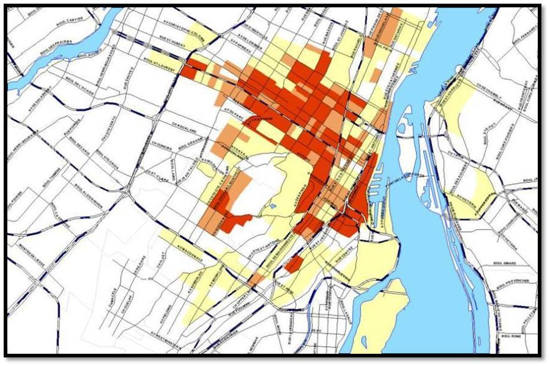
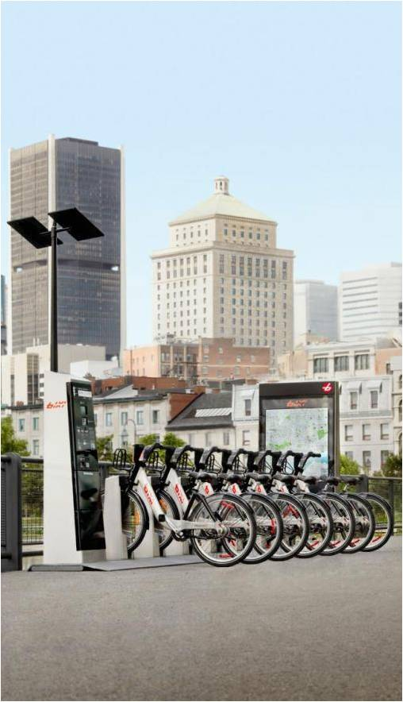
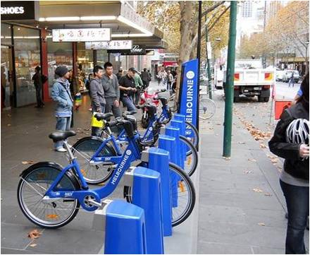
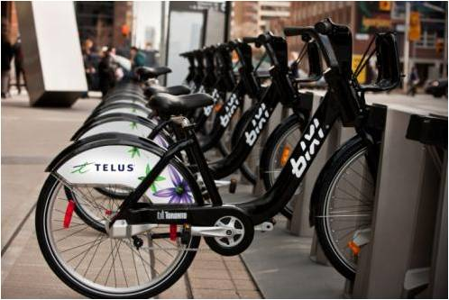
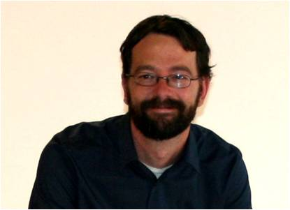

Tools Used
Initiated By
- PBSC Urban Solutions / Le Societé en commandite stationnement de Montréal (Montreal's parking authority)
Partners
- TELUS (telecommunications)
- Rio Tinto Alcan (mining)
- Desjardins (financial cooperative)
Results
- By 2013, the Montreal system had 5,120 bikes and 411 stations, and more than 13 million trips had been made
- On a typical day, 21,000 BIXI trips were made in Montreal, each bike making an average of 6 trips, and BIXI users cycled more than 48,000 km
- 90%+ trips were made by BIXI members.
Landmark Case Study
BIXI Bicycle Sharing
BIXI Montreal is a great example of how to make urban cycling a more practical and attractive transportation option. BIXI makes it convenient for commuters to cycle rather than drive, especially for frequent, short trips. The system was specifically developed to augment Montreal’s existing transit system and between 2009 and 2013 Montrealers made more than 13 million trips with BIXI. It is a turn-key service that is inexpensive and replicable across many countries and cultures. In addition, by making cycling more chic and attractive, BIXI has had a major impact on cycling in North America. Revised in September 2015.
Background
A bike-sharing system first came to the attention of the City of Montreal in 2007 when it was working on a new transportation master plan. The city gave the original mandate for the program to Montreal's parking authority (Societé en commandite stationnement de Montréal) because they had the expertise with wireless technologies that would be needed to implement the system. The authority was also used to dealing with municipal infrastructure and street furniture, which would also be factors in implementation.
As the system was being developed, the parking authority created the Public Bike System Company (PBSC) to manage, operate and further develop the system in Montreal. PBSC has since become a private company, offering its bike-sharing expertise to cities around the world.
Getting Informed
Before launching BIXI in 2009, PBSC created a blog and held a contest to name the system. BIXI was ultimate chosen for its combination of the words "bicycle" and "taxi."
Surveys were used to identify the target audience - predominantly young adults aged 25 to 34 who were white collar workers with median incomes of about $35,000 and regular users of transit. This information helped PBSC decide where to site its first bike stations.
Location of Audience

Location of Bike Stations

PBSC also made presentations to local businesses and at conferences to explain the system to potential sponsors and supporters and to ask for their input.
Says Nicolas Blain, planning and development analyst with PBSC, "By knowing what people wanted, we were able to give them a better service. We created kind of a family spirit between everybody to make sure that the system would be viable."
PBSC developed design criteria for the system. BIXI had to:
- Enhance the urban landscape, not be an impediment
- Be practical and aesthetic, with sturdy and sleek, modern-looking bikes
- Ensure that all components were easily transferred to different locations and that the technology platform was easy to set up.
Delivering the Program
PBSC hired Quebec-based Michel Dallaire, an award-winning industrial designer, to design the bikes and docking stations. Dallaire's personal experience with Paris's Vélib bike-sharing system helped him design the BIXI Montreal system, keeping in mind Montreal's climate.
Bikes and Docking Stations
Solar Powered Docking Station

Each BIXI station consisted of a pay station, bikes, and bike docks, which were fitted into modular technical platforms powered by solar energy. The platforms served as the base and electronic ports for the wireless communication system that operated the pay stations and bike docks. Stations could be installed, expanded, configured and removed in about 30 minutes, and were monitored by a real-time management system.
The bikes were made of rust-proof aluminum instead of steel. "I like to compare the bike to a tank because it's almost indestructible, can go everywhere and it is fast," says Blain. "The bike design is curved to represent a boomerang, which is the main principle of the bike-sharing system: you throw it and it will always come back to the same point."
Sleek and Trendy Design

The docking station was designed to use the same amount of space a car does on the street, so the stations could be easily installed on main plazas or directly on sidewalks.
On-Street Station

On-Sidewalk Station

The stations were entirely modular; they could be mounted and removed quickly without any alterations to streets or sidewalks. Almost all of the components for the Montreal BIXI system were made in Quebec—the bikes were built in Chicoutimi, and one of BIXI's sponsors, Rio Tinto Alcan, provided the aluminum.
"The stations are entirely powered by solar energy," says Blain. "Everything's wireless, we have almost no impact on the environment, and can install a station pretty much anywhere in the city."
The stations and the bikes were sleek and sturdy, making them a trendy option for people, as well as a low-cost transportation option. (Norm Appeals)
Program Launch
BIXI Montreal was launched in May 2009. Due to the city's harsh winter climate, BIXI operated as a seasonal service from mid-April to mid-November. (Some BIXI systems in other cities operate year-round.)
Based on the data gathered from the surveys, BIXI erected the first stations in areas nearest the target audience's home and work, including major transportation hubs and was soon fielding requests for new stations throughout the city (in 2012 alone, PBSC received 800 requests).
"In our first year, everybody would come into the downtown area by bike but wouldn't go back home by bike because of the hills," says Blain. "Now that we're in our fifth season, people take the bike and go pretty much everywhere. They've gotten used to it, they've learned how to bike in the city and they love it." (Overcoming Specific Barriers; Building Motivation over Time)
How BIXI Works
The BIXI system made it easy for even the most casual user to choose cycling as a transportation option. In particular, BIXI offered excellent connections between transportation modes.
"With BIXI, a lot of people start from their home, take a bike and go to a major bus or subway train stop, to then take them to work," says Blain. "We've got stations everywhere to create that inter-modality."
To get a bike, users:
- Went to the pay station and inserted a credit card. The system provided an unlocking code, which was valid for 5 minutes.
- Entered the code on the keypad of the bike dock of their choice, which released the bike. The 30-minute allotted time began.
- Returned the bike to any BIXI station in the city when they were done.
Pricing for the Montreal BIXI system fostered use for short trips. A BIXI user could purchase online a year-round membership ($82.50), a monthly membership ($31.25) or an occasional membership ($5.00) with unlimited trips of 45 minutes or less (i.e., the user had to dock the bike at a station within the 45 minute allotted time or was charged extra), or could choose to purchase a 1-day or 3-day access at the station.
Although the City of Montreal had no bicycle helmet law, PBSC did recommend that users wear one. "It's one of the reasons we made deals with local shops to get bike helmets at a discount for BIXI members," says Blain.
PBSC was in the process of developing a helmet vending machine. Users would be able to pick up and return both the bike and helmet at the station.
Security
During the first summer of operation, about 50 bikes were stolen or vandalized, so PBSC modified its security system. Since then, Blain reported that there had been very few incidents "We might find some flat tires, but nothing major," he says. "No graffiti at all. Nothing has been destroyed. Our bikes are so sturdy that it's almost impossible."
Permits
To site each station, PBSC obtained a standard permit for temporary occupancy, issued by the City of Montreal. "For each permit, we ask for the specific road and location," explained Blain. "Before the season even starts, we have 400+ permits that cover locations on streets, sidewalks, and some that are in paid parking lots."
BIXI's Future
In 2012, PBSC estimated that there were approximately 500 bike-sharing systems worldwide. "There are also tons of requests for proposals to add systems, so the future is pretty bright," said Blain.
"Regardless of the city, in my experience, everybody thinks at first that a bike-sharing system is mainly used by tourists and for casual users, but then they discover that people use the system as their principle means of transport to get to work," said Blain. With 20,000+ trips per day in Montreal, other cities were starting to see that BIXI as a low-cost and is an easy way to implement active transportation.
Partnerships
Primary sponsors included TELUS, Desjardins and Rio Tinto Alcan; the bikes and docking stations carried the logos of these companies.

Since inter-modality connectivity was an important consideration for the Montreal BIXI system, PBSC also partnered with local shops and other organizations, like Communauto (car sharing) and the Societé de Transport de Montreal (STM), to offer discounts to BIXI members.
Financing the Program
BIXI Montreal members and users were the main financial revenue stream for the system. The three sponsors contributed about 50% of PBSC's revenue.
Blain estimated the total infrastructure cost per bike at between $4,000 and $4,500, but noted that because the system is customized, the price can vary.
For other BIXI systems, Blain says that most financing fell into one of three categories, which were often combined: subsidies from the city where the system was installed; subsidies from other government programs; and user revenues.
Measuring Achievements
BIXI had a wireless communications network that PBSC used to track real-time data on the:
- Number of bikes at any given station
- Functional status of each bike, the solar panels, and the electronic components of the system
- Traffic and usage patterns of stations and bikes, and
- Location of every station and bikes in docking points throughout the system.
PBSC also used a number of other data sources to learn more about its target audiences. For example, using a GIS (geographic information system) database from Statistics Canada allowed BIXI to see who their members were, their lifestyle, etc. "We also use a segmentation database to cluster the target populations we develop and have used some databases about family incomes and expenditures."
Each year, at the end of the season, BIXI also surveyed its members to measure satisfaction levels and canvassed them for their ideas on improving the service.
In an independent study, University of Montreal researchers examined what impact exposure to BIXI had on the likelihood of cycling. Telephone surveys with about 7,000 people were conducted three times: when the program was first launched in 2009, later in the first season, and again in the second season.
Results
By 2013, BIXI Montreal had 5,120 bikes and 411 stations, and more than 13 million trips had been made since its 2009 launch.
Typical daily BIXI Montreal usage was as follows.
- 21,000 trips per day (27,000 on sunny days)
- Average use time: 13 minutes per day
- Average distance: 2.5 km (1.6 miles)
- Each bike made an average of 6 trips per day
- Each day, BIXI users cycled more than 48,000 km (more than the circumference of the Earth!)
- 90%+ trips were made by BIXI members.
"BIXI really changed the behavior of the population," says Blain. "Before BIXI, 25% of bike trips were made to go to work. Two years after BIXI was implemented in Montreal, it increased to 53%, so we've been able to reduce the number of cars on the road." In surveys, users said that without BIXI, only 3% of them would have used a bike, whereas 14% would have taken a car.
Data from the wireless communications network revealed that peak hours (am and pm) for BIXI lined up with vehicle peak hours. "That’s a good indication that people are using BIXI exactly the way they would use a car, a subway or a bus," says Blain.
"The other interesting thing that we found out by surveying our members is that going to work is the main reason they use BIXI. More than 40% of them use it on a daily basis to go to work."
Results from the University of Montreal study, published in the March 2013 issue of the American Journal of Public Health, showed that people who lived close to BIXI stations were more likely to use the system. Once weather, environment and other variables were factored in, the researchers found that exposure to BIXI significantly increased the likelihood of cycling.
Worldwide, the BIXI bike-sharing system had more than 37,000 bikes in 2013 and operated in 15 cities and 2 University campuses, including Montreal, Toronto, Melbourne, Australia, London, England and New York.
The BIXI system won several awards, including being named on the best innovations of the year (2008) by Time Magazine, an Edison Award (Gold) for best new product, and the 2009 Transportation Association Canada's Sustainable Urban Transportation Award, among others.
Contacts

Nicolas Blain
Planning and Development Analyst
PBSC Urban Solutions
nblain@publicbikesystem.com
Montreal BIXI: https://montreal.bixi.com/
Notes
See also our Citi Bike (New York) case study.
Update (September 2015)
The company sold a record number of season passes in 2015 with 52,000 bikes at 460 sites in Montreal, Westmount and Longueuil. In addition, the number of people who occasionally used the bike-sharing service jumped by 83 per cent. The increases were due in large part to adding one-way ride for $2.75 and price drop for season pass to $85. There were 150,000 occasional rides between January 1 and the end of August 2015, up from 84,400 in 2014.
BIXI had filed for bankruptcy in 2014 and had been purchased by Bruno Rodi in 2015.
Lessons Learned
Know your audience
Before launching BIXI Montreal, PBSC conducted surveys, and market and data research on their target audience in order to design a system that would meet their needs. "By knowing what people want, you're able to give them a better service," says Blain.
In any BIXI system, Blain says that you will always have "early adopters," those people who are likely already cycling and will use the system immediately. "Early adopters are in every city," says Blain, "so you need to target them first and, after a while, membership will grow through the population."
As the Montreal BIXI system matured, PBSC identified other target audiences, such as seniors and tourists.
"Older people are now starting to use the system and we've seen an increase in memberships from them," says Blain.
Although BIXI Montreal was aimed at short commuter trips, PBSC also began targeting the tourist market in Montreal as a result of what it learned from Ottawa's BIXI system.
"The first season we only had ten stations in Ottawa, so we targeted the main tourist areas and added stations there," explains Blain. "We did the same thing in Montreal and those stations are really working well."
Site selection
Blain says that site selection for the first docking stations was key as they needed them to be close to their future members.
"Once you find where those people are living, and in relatively high density, it's a good indicator of where you will find future members and a site to install a station," says Blain. PBSC received hundreds of calls a year requesting new station locations. "Those requests are also a good indicator of where we need to put stations."
Bike distribution
One of the biggest challenges for any new BIXI system is redistributing the bikes to ensure that all stations are well-stocked. In the case of Montreal, however, this became less of an issue over time.
"At first, we needed to empty the stations in the downtown area and physically bring the bikes back to the local stations to make bikes available to the population," says Blain. Over time, more bikes were being returned to their original stations so there was far less redistribution required.
Make it sustainable
BIXI Montreal was financed through a combination of revenues from users and sponsors. Blain says that the system could become sustainable over time because PBSC planned their network so carefully.
"We developed some mathematical models to evaluate the potential of each city," says Blain. "We are able to see, just by a quick look throughout our system, how many potential members there are, how many casual users there are, and where the potential is for the best sites. By knowing that, you can plan a system that will be financially sustainable."
Using social media was also a low-cost way to keep in touch with users. "Our users are the social media generation, so it's a huge part of our system and our marketing," said Blain. "Everything goes through Facebook: changes in the network [of stations], announcements, and to obtain direct feedback from users."
Landmark Designation
The program described in this case study was designated in 2011. The case study was written by Jay Kassirer in 2013.
Designation as a Landmark (best practice) case study through our peer selection process recognizes programs and social marketing approaches considered to be among the most successful in the world. They are nominated both by our peer-selection panels and by Tools of Change staff, and are then scored by the selection panels based on impact, innovation, replicability and adaptability.
The panel that designated this program consisted of:
- Ben Campbell and Lisa Goodlet, Transport Canada
- Mark Dessauer, Active Living by Design
- Ryan Lanyon, Metrolinx
- Nathalie Lapointe, Federation of Canadian Municipalities
- Jacky Kennedy, Green Communities Canada
- Lorenzo Mele, Town of Markham
- Geoff Noxon, Noxon Associates
- Chuck Wilsker, U.S. Telework Coalition
- JoAnn Woodhall, Translink